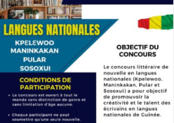

Concours des écrivains en langues nationales
Grand prix IRLA DRE DIAKA SIDIBE aux ecrivains en langues nationales, aiguisez vos plumes,remplissez vos encriers et venez participer à la première édition du concours litteraire.
L'IRLA est un centre de référence dédié à la promotion, la documentation et la valorisation des langues guinéennes. À travers ses travaux de recherche, ses publications et ses projets, l’IRLA œuvre pour la préservation du patrimoine linguistique national et la diffusion des savoirs culturels en Guinée. Notre mission est de renforcer l’usage des langues locales dans les domaines de l’éducation, des médias et du développement, tout en facilitant l’accès aux ressources linguistiques pour tous.
Grand prix IRLA DRE DIAKA SIDIBE aux ecrivains en langues nationales, aiguisez vos plumes,remplissez vos encriers et venez participer à la première édition du concours litteraire.

l’IRLA soutien les masters Guinée en les invitant à la cérémonie de lancement de la Semaine de langues guinéennes. Cette initiative montre l’importance accordée à la promotion et à la préservation des langues locales en Guinée.

Partenariat de coopération inte-runiversitaire entre l’IRLA et le CREDEL, ainsi que sur la participation d’un directeur général à la cérémonie de lancement de la Semaine de la langue guinéenne
Visite de l’Union africaine à IRLA par M. Taulbo de soumettre un document du CELHTO.

Madame Dre Diaka KABA, ministre de l’enseignement supérieur et de l’innovation, a assisté à la célébration du 52e anniversaire de l’IRLA en Guinée, soulignant l’importance de la littérature et de la recherche scientifique

IRLA collabore avec des orpailleurs pour préserver et conserver les langues locales, en encourageant la transcription, la conservation de l’environnement, l’intégration sociale, le développement durable et le partage des connaissances.
Langue nationale parlée en Haute-Guinée
Langue nationale parlée en Basse-Guinée

Langue nationale parlée en Moyenne-Guinée
Langue nationale parlée en Guinée-Forestière
La politique linguistique est connue comme étant toute décision d’un Etat permettant de réguler l’usage d’une ou plusieurs langues parlées sur le territoire relevant de sa souveraineté.
A travers le français et l’anglais comme supports, nos experts, formatrices et formateurs, vous donneront le goût de la découverte et de l’apprentissage des richesses de nos langues.
Experts dans la Traduction de contenu, nous brisons la barrière des langues nationnal guinéenne notament kisiei, maninkakan, pular, kpɛlɛ, soso, loma, onéyan et en wamey pour vous livrer du contenu de qualité.
L’Institut de Recherche Linguistique Appliquée (IRLA) est un Etablissement Public à caractère scientifique et technique chargé de sauvegarder et de développer le patrimoine linguistique guinéen, support privilégié de la culture nationale dans sa diversité. Il est créé par l’Ordonnance No304/PRG/SGG/du 12 Décembre 1985. Placé sous la tutelle du Ministère de l’Enseignement Supérieur, de la Recherche Scientifique et de l’Innovation. (M.E.S.R.S.I).
L’Académie des Langues avait, en particulier, pour mission de travailler sur le corpus des langues guinéennes (description phonologique, morphosyntaxique, lexicale…) et de mener des recherches appliquées visant leur enseignement/apprentissage (élaboration de grammaires, de dictionnaires, réflexion sur la méthodologie d’enseignement des langues guinéennes, etc.) Seize (16) ans de pratique La Guinée, dès son accession à l’indépendance, a fait de la promotion des langues nationales un enjeu de politique publique.